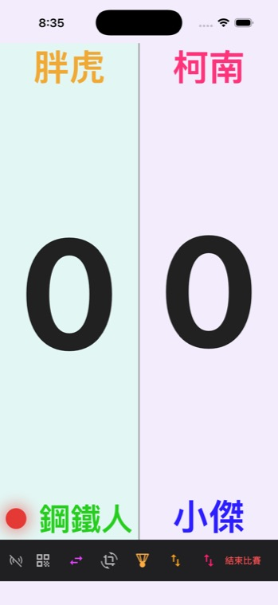
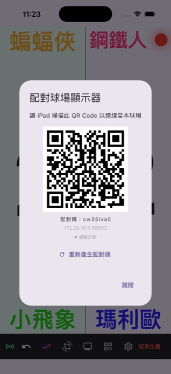

有問題、想回報錯誤，或有功能建議？
請寄信到 dotbadminton.app@gmail.com
信裡附上你的 iPhone 型號、iOS 版本與 App 版本（在「設定」頁最下方）會幫助我們更快找到問題。

站位與發球指示
紅點標出這一球誰發球、該站在左還是右發球區。

戴著手錶就能加分
Garmin 用實體按鍵，Apple Watch 用觸控，不用回頭找手機。

多一台裝置就是計分板
掃一下 QR 就架在場邊，四個人抬頭都看得到。
開始計分
怎麼開一場比賽？
打開 App 按「開始比賽」，先選賽制，再填隊伍與球員。

球員名稱可以存成常用球員，下次開賽直接選。
怎麼加分？
點畫面上該隊的半邊就加一分。畫面右半永遠是「我方」。發球方、發球區（左／右）、局數、賽末點與 Deuce 都會自動處理並標示出來。
搞不清楚現在該誰發球、要站哪一邊？
不用記，畫面會標出來。
- 誰發球：紅點標在他的名字旁邊。
- 站哪一區：紅點在上或在下，對應右發球區與左發球區。
- 雙打換位：發球方得分時，兩個人的位置會自動對調，照著螢幕站就對了。
場邊計分板上也有同一個紅點，所以四個人抬頭就知道該怎麼站。
按錯了怎麼辦？
按「還原」可以退回上一步，連續按可以退回更多步。比分、發球權與換邊狀態都會一起還原。
Garmin 手錶計分
需要什麼？
需要一支有實體按鍵的 Garmin 手錶，並安裝 DotBadminton 手錶 app：在手機的 Connect IQ App 裡搜尋「DotBadminton」。能不能裝，Connect IQ 會依你的手錶自動判斷，支援機型也以那裡顯示的為準。iPhone 上要裝 Garmin Connect App 並保持在背景執行。
只有觸控、沒有上下鍵的機型目前不支援。
沒有 Garmin 手錶也可以正常使用 App 的所有計分功能。
怎麼連接？
進入「設定 → Garmin 手錶 → 連接 Garmin 手錶」，會跳到 Garmin Connect App 選擇你的手錶，選完自動跳回。手錶上還沒裝 app 的話，在手機的 Connect IQ App 裡搜尋「DotBadminton」即可安裝。
按鍵怎麼對應？
下鍵（DOWN）永遠是「我方」加分，上鍵（UP）永遠是「對方」。「我方」是哪一隊由開賽設定決定，球場上兩隊各有一個手錶標記（⌚），點一下就把「我方」指過去。
開賽時隊伍選反了？
用手錶選單的「對調我方」可以當場修正，不用回手機改。
設定頁顯示「手錶未安裝 DotBadminton」
代表手機連得上手錶，但還沒收到手錶送來的訊息。打開手錶上的程式、按一下任何鍵，或等最多 10 秒的閒置心跳，這個提示就會消失。
手錶突然沒反應
比賽期間 iPhone 上的 App 要保持開著，但不能從多工畫面滑掉。被關掉之後手錶就連不到手機，重新打開 App 即可，手錶會自動重送還沒確認的按鍵。
手錶計分在前景、背景或鎖屏都可以；但有接計分板時請保持在前景，鎖屏會讓計分手機與計分板之間的連線中斷。
Apple Watch 也可以嗎？
可以。Apple Watch 用觸控加分，不需要實體按鍵。
場邊計分板
怎麼配對？
計分的手機上顯示 QR Code，另一台裝置開啟計分板模式掃一下就完成配對。

兩台裝置不需要連在同一個區域網路，也不限機型，螢幕大的 iPad 很適合當計分板。
計分板上會顯示什麼？
字夠大，站在場上四個角落都讀得到。
可以在計分板上計分嗎？
不行，這是刻意的設計。計分板只負責顯示，避免場邊有人經過誤觸改到比分。計分一律在計分的手機上操作。
DotBadminton Plus
Plus 有什麼？
- 整場零廣告
- Garmin 手錶每場都能計分，不限場次
- 常用球員無上限
兩種方案解鎖的內容完全相同。
免費版有哪些限制？
計分功能完全不受限。常用球員最多 4 位（雙打剛好存得下），Garmin 手錶計分每天第一場免費，之後看一段獎勵廣告就能繼續。
換手機了，怎麼恢復購買？
用同一個 Apple ID 登入新手機，打開 App 進入「設定 → 升級 DotBadminton Plus」，按「恢復購買」即可。不會重複扣款。
怎麼取消訂閱？
訂閱由 Apple 管理，不是在 App 裡取消。請到 iPhone「設定 → 點最上方你的名字 → 訂閱項目」找到 DotBadminton 後取消。
在免費試用期間取消不會收費。取消後仍可使用到當期結束。
試用期什麼時候開始算？
7 天免費試用只提供給年訂閱，從購買當下開始計算。期滿前 24 小時內會自動續訂並向你的 Apple ID 收費。
資料與隱私
比賽紀錄存在哪裡？
全部存在你的 iPhone 上，沒有雲端備份，我們也看不到。這代表：刪除 App 會一併刪除所有紀錄，換手機時紀錄不會跟著走。
需要註冊帳號嗎？
不需要。本 App 沒有帳號系統。
隱私權政策
請見隱私權政策。
系統需求
需要哪些裝置？
- iPhone：iOS 16.0 以上
- 場邊計分板：另一台 iPhone 或 iPad，iOS／iPadOS 16.0 以上，不需要與計分手機在同一個區域網路
- Garmin 手錶計分：有實體按鍵的 Garmin 手錶，另需從 Connect IQ Store 安裝手錶端 app